1 / 7

💻 TEKNOLOGI
Dari Rumor Jadi Resmi!
Apple akhirnya mengumumkan event 13 Oktober — dan temanya jelas: smart home. HomePad, HomePod mini 2, Apple TV 4K baru. Geser →
2 / 7
📢
Diumumkan 8 Oktober, Teaser 17 Detik
Greg Joswiak, bos marketing Apple, mengunggah teaser 17 detik di X pada 8 Oktober 2026 — menampilkan logo Apple pelangi yang disulam kain, dengan tagline "Welcome home". Undangan pers bertajuk "Apple Experience" digelar di Tribeca, New York, Selasa 13 Oktober pukul 09.00 ET — undangan fisiknya dibagikan publik oleh YouTuber Marques Brownlee (MKBHD).
3 / 7
🏠
Bintang Utama: HomePad (Dirumorkan)
Bocoran menyebut Apple menyiapkan smart home hub baru berkode internal J490 — persilangan iPad dan HomePod. Layarnya sekitar 6–7 inci, tersedia versi meja dan tempel dinding, plus kamera dan sensor pendeteksi kehadiran — semuanya dikendalikan Siri AI. Ingat: nama dan detail ini masih rumor, belum dikonfirmasi Apple.
4 / 7
🔊
HomePod mini 2: Warna Baru Estetik
HomePod mini akhirnya dapat penyegaran pertama sejak 2020. Warna barunya — pink, hijau, biru — auto estetik buat kamar atau kosan. Chip S-series dan N1 yang lebih kencang disiapkan khusus untuk menjalankan Siri AI.
5 / 7
📺
Apple TV 4K Baru + Alasan Penundaannya
Apple TV 4K generasi baru — yang pertama sejak 2022 — dirumorkan membawa chip A19/A19 Pro, RAM lebih besar, chip N1, dan remote baru, semuanya untuk Siri AI. Ternyata produk-produk ini sempat tertunda menunggu Siri AI siap; asisten baru itu masuk fase beta pada September 2026.
6 / 7
💬
Kata netizen
Kolom komentar di IG dan Threads campur aduk. Ada yang skeptis — "I ain't seen it on Apple's website" — ada yang menebak tema, "Welcome home so I bet it's all smart home tech", ada yang nostalgia logo retro, "are they returning to the old logo design?", ada yang antusias, "Finally! Apple TV!", dan ada yang nyinyir, "How is this relevant? So late to market." (Suara netizen — bukan fakta.)
7 / 7
🤔
Efeknya ke lo apa?
Event-nya 13 Oktober pukul 09.00 ET — artinya Selasa malam WIB, bisa lo tonton sambil rebahan. Buat yang ekosistemnya Apple, ini penentu masa depan smart home lo. Harga hub-nya dirumorkan sekitar US$350 (belum resmi) — jangan FOMO dulu, tunggu pengumuman resmi dan harga Indonesianya. Siapin dompet, bukan cuma hype.